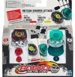

Meteor Shower Attack Set
| Meteor Shower Attack Faceoff Set | |
|  | |
| Number: | BB-88B and B-127 |
|---|---|
| System: | Metal Fight Beyblade |
Contents
Note: This set's release is exclusive to Hasbro.
Contents
- BB-88B Meteo L Drago LW105LF (Opaque yellow Face, black Clear Wheel, opaque red Track and Tip)
- B-127 Basalt Beafowl BD145RSF (Twisted Befall BD145RSF) (Translucent green Clear Wheel, opaque green Track, black Tip)
- Two Ripcord Launchers (Black and orange)
Overall
This Set has many useful parts, the highlights of it being the Basalt Metal Wheel, and the BD145 Track. Although Basalt is outclassed by other 4D Metal Wheels such as Death and Duo and a few Synchrom combos from Zero-G, it has impressive defensive properties due to its heavy weight, even with the "Spiral Staircase of Death" it possesses. BD145 also plays a huge role in successful Defense customs due to its ability to block low attackers, and to significantly increase the weight of a Beyblade. Beafowl, LW105, and LF usually have no use in today's Metagame, however. Beafowl can be replaced by other Clear Wheels which are balanced, LW105 is outclassed by lower tracks, such as 90 and 85, and LF is outclassed for Attack customizations by rubber tips, an example being LRF. Meteo, L Drago II, and RSF can be utilized in Spin Stealing and Defense combos respectively. For example, Meteo L Drago can be used in the custom Meteo L Drago CH120EWD effectively, mainly because of the rubber placed on its Clear Wheel which helps absorption. Although outclassed by RDF, RSF can be used effectively in defensive combos, due to its grip on the stadium floor and its higher surface area to spin on than RS, which improves its overall balance. Although Befall, LW105, and LF are severely outclassed in today's metagame, Basalt, BD145, and the other parts in this set more than make up for it. For this reason, this Set should only be purchased by beginners who have no access to TAKARA-TOMY Beyblades and who want to gain a few competitive parts.